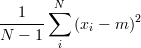
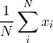

This problem set contains some exercises
to introduce you to OCaml (and, more generally, to many of the ideas
underlying statically-typed functional languages).
First, you should download the assignment tarball,
and extract it by saving it somewhere and running tar -xzf ps1.tgz (or using your favorite GUI program such as 7-Zip).
Within, you will find a solution template (ps1.ml)
that contains a commented-out stub for each function you are asked to implement;
you should uncomment them as you fill in your solutions.
(*>* Some text here *>*) Give the type of each of the following OCaml expressions.
For example, the type of (1, 2) is int * int.
Give expressions that have the following types:
((int * float) list * string) list
(float -> float -> float) * (int * int -> int)
Replace ??? with an expression that makes the code
type-check correctly. You might start by adding types to the
declarations.
let rec foo bar =
match bar with
| ((a, b), c) :: xs -> a * (b + c + (foo xs))
| _ -> 1
in foo (???)
let v = (32.0, 28.0) in
let square x = x *. x in
let squared_norm (w:float * float) : float = ??? in
let d = sqrt (squared_norm v) in
int_of_float d
The following function is computationally correct, but it was written with poor style.
You may want to consult the OCaml
style guide. Rewrite this function using pattern matching, so
that it does the same thing, but with style. You may not use the
standard library function List.merge for this problem.
let rec merge (a: int list) (b: int list) : int list =
if (List.length a) = 0 && (List.length b) = 0 then b
else if (List.length b) = 0 then a
else if (List.length a) = 0 then b
else if (List.hd(a) < List.hd(b)) = true then [List.hd a]
@ (merge (List.tl a) b) else [List.hd b] @ (merge a (List.tl b))
Write a function sorted : int list -> bool that
returns true if the items in the list are in non-descending
order. The empty list is considered to be sorted.
For example, sorted [1; 1; 2; 4] = true and sorted [1; 2; 3; 1] = false.
Write a function partition : int list -> int -> int list * int list
that takes an int list and returns a tuple (less,
greater) where less is a list containing
all the values from the given list that are less than or
equal to the given integer, and greater is a list of all the values
greater than the given integer. If a value appears multiple times in
the input list, then it should appear the same number of times in one of the
returned lists. You should not assume the input list is sorted,
and you should ensure that you return the partitioned elements of
each list in the same order as they appeared in the input list. For example, partition [1;3;6;2;5] 3 = ([1;3;2], [6;5]).
Write a function
unzip : (int * int) list -> int list * int list
which, given a list of pairs, returns a pair of lists, the first
of which contains each first element of each pair, and the second
of which contains each second element. The returned lists should
have the elements in the order that they appeared in the input.
So, for instance,
unzip [(1,2);(3,4);(5,6)] = ([1;3;5],[2;4;6]).
variance : float list -> float option
that returns the sample variance
of the numbers in its input list, if
the list has at least two elements
(otherwise, it should return None).
On an input list (containing at least two elements),
the sample variance is defined to be  where xi is the ith value of the input list,
N is the number of values in the input list, and m is the arithmetic mean:
. For example,
variance [1.0; 2.0; 3.0; 4.0; 5.0] = Some 2.5,
while variance [1.0] = None and variance [] = None.
Remember to use the floating point version of the arithmetic operators when operating on floats (i.e. use +., *., and /. instead of +,
*, and /). You can use the float function to cast an int to a float.
Write a function perfect : int -> bool that returns
true if its input is a perfect number. A
perfect number is a positive integer that is equal to the sum of its
positive divisors except itself.
For example, perfect 6 = true and perfect 100 = false.
permutations : int list -> int list list such that permutations lst returns a list containing every
permutation of lst. For example, one correct answer to permutations [1;
2; 3] is [[1; 2; 3]; [2; 1; 3]; [2; 3; 1]; [1; 3; 2];
[3; 1; 2]; [3; 2; 1]]. It doesn't matter what order the
permutations appear in the returned list. Note that if the input
list is of length n then the answer should be of length
n!.
interleave : int -> int list -> int list list,
that yields all interleavings of its first argument into its second:
interleave 1 [2;3] = [ [1;2;3]; [2;1;3]; [2;3;1] ].
You may also find occasion for the library functions
List.map
and List.concat.
To submit the assignment, your assignment directory must be on nice.fas. If you were working on your computer, upload the directory containing ps1.ml and the other downloaded files to nice. To upload, you'll need an FTP client (see instructions page, under "Uploading your work to nice").
Run make
submit. You should get
output like the following:
$ % make submit ./submit.sh Ok, submitting the files in /home/b/y/byoung/release/ps1-submit Creating temporary directory /tmp/byoung.submit... Copying assignment files to /tmp/byoung.submit... Submitting cscie250 assignment 1... Done! Temporary files removed. Done! $
If you've submitted successfully, you're done! Back to CSCI E-250 Home